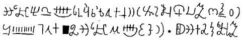

(1805-44)
Eğer ki aşağıda yer alan "alıntı" anlaşılmaz görünüyorsa, bunun nedeni gerçekten anlaşılmaz olmasıdır. Yine de yaratıcısı tarafından Reformdan Geçmiş Mısır Hiyeroglifi olarak adlandırılan bu kurgusal yazı, Salt Lake City'nin kuruluş nedenidir. Bu yazı Joseph Smith Jr.'ın The Book of Mormon'ı mucizevi bir biçimde çevirdiğini ileri sürdüğü dile ilişkin tek kanıttır. Yazı Caractor'lar başlığını taşıyan bir kâğıt parçasından alınma;

O kâğıt parçası da daha sonra, kitabın yayımlanması için para ödeyecek olan Martin Harris'e verildi. Harris, antik metinlerin otantikliğini ve çıkış yerini belirlemek amacıyla metni Columbia'dan bir profesöre vermişti. Akademisyenler kendilerine özgü belkiler, olabilirler ve neden olmasınlarla Harris'in fikirleri çevresinde lafı döndürmeye başlayınca, her şeye kolaylıkla inanan Harris'in zihninden bütün bunlar uçup gitti ve zavallı klasik eser, koleksiyoncusunun bu karalamaları gerçek, antik yazı olarak ilan ettiğinin söylendiği ortaya çıkınca da bunu kesin bir dille inkâr eden yazılar yayımlaması gerekti.
Reformdan Geçmiş Hiyeroglif Yazılar, Joseph Smith'in öyküsünün en uçuk yönünü oluşturmaz. Kendisinin de söylediği gibi, "Anlattığım tarihe inanmadıkları için kimseyi suçlamıyorum. Yaşadıklarımı yaşamış olmasaydım kendim de inanamazdım" Smith bir zamanlar ginseng dışalımıyla uğraşmış meteliksiz bir çiftçinin oğluydu. Zaman içinde bir peygamber, kendisini orgeneral ilan etmiş bir başkanlık adayı haline geldi. Bugün de milyonlarca insan ona tapınmakta. Bir rakibinin matbaa makinesini harap ettiği için hapse atıldığı Carthage, Illinois'te hücresindeyken bir grup tarafından linç –ya da şehit– edildi.
Ancak 1827'de tamamen sıradan biriydi; bir "gözetleme taşı" kullanarak Kızılderililer'in altınlarının yerini belirleyebildiğine ilişkin savından ötürü yasalarla başının hafiften belaya girmesi dışında. Ama her şey değişmek üzereydi. Dört yıldan beridir Moroni adında bir melek tarafından ziyaret edildiğini söylüyordu; melek doğru zaman geldiğinde onun ellerine bir altın tablet seti bırakmayı vaat etmişti. Reformdan Geçmiş Mısır Hiyeroglifi ile yazılan bu tabletler, Amerika'nın yerli sakinlerinin din tarihini, erdemli Nephi ile onun erkek kardeşi Laman'ın kötü kalpli ardıllarını ayrıntılarıyla anlatıyordu ve Smith, bu tabletlerin içeriğini dünyayla paylaşacaktı.
Tabletler eline geçtikten sonra onları gözü gibi sakladı ve içeriklerini de geceleri yatak örtüsünün altında çözdü. Joseph'in eski diller konusunda hiçbir bilgisi olmadığını bilen Moroni de, buna uygun olarak Urim ve Thummim adında iki büyülü gözlük hazırladı; bu gözlükler sayesinde tarih anlatımlarını anlayabiliyordu. Bir anlaşmazlığın ardından Moroni, gözlüklere el koydu ve Joseph, kafasını, içinde gözetleme taşının bulunduğu geniş bir şapkaya sokup metindeki simgeleri okumak zorunda kaldı. Okuduklarını sekreterlere dikte ettirdiyse de kutsal cezalandırmanın acılarına katlanmak zorunda kalmamaları için altın tabletlere bakmaları yasaktı. 1829 yılında, bu çektiklerinin meyvesi The Book of Mormon adıyla yayımlandı.
Göklerden gelen haberciyi ya da altın tabletlerin gerçekten var olup olmadıklarını bir kenara bırakarak gözlüklerden ya da daha doğrusu gözlüklerin adlarından başlayabiliriz. Urim ile Thummim'den, Eski Ahit'in beş kitabında ve daha eski tarihsel içerikli kitaplarında söz edilir, ama gerçekte ne oldukları da tartışmaya açıktır. Göç Kitabı 28:30 ve Leviticus 8:8'de bu ikisinin Musa'nın erkek kardeşi ve ilk başrahip olan Aaron'un göğsünü koruyan zırhı süslediği anlatılır. Belli ki peygamberlerle bağlantılı bir işlevleri vardı, çünkü I. Samuel 28:6'da Saul düşler, peygamberler ya da Urim yoluyla Tanrı'yla iletişim kuramaz. 28:21'de bunların bir tür kehanet için kullanıldıkları onaylanır. Çatal çubukla yeraltı suyu arama ya da aşık atma için kullanıldıkları yorumlarında bulunulmuştur. Hiçbir yerde de burun ile kulaklar üstüne yerleştirilebileceklerinden ya da bir biçimde saydam olduklarından söz edilmez.
İncil'den kaynaklanan ve alışılmışın dışında sayılabilecek küçük bir bilgi parçacığı, koca bir efsaneye mal edildi. The Book of Mormon'un çarpıcı yönü, kavramlarının çok ölçüsüz olması değil, o dönemi ne kadar yakından yansıttığı. Smith'in Mısır yazısını seçmesi kusursuz ölçüde kurnazcaydı, çünkü hiyerogliflerin anlamını çözebilmek için İngiliz okuyucuların Rosetta Taşı'nı, yani 1837'yi beklemeleri gerekecekti. Benzer biçimde, Mormon ve Nephi soyundan gelenlerin Laman yanlısı baskıcılara yenik düştüğü nihai muhabere de dönemin amatör antropologlarının yerli kabileler tarafından inşa edilmiş olabileceğine inanmadıkları Kızılderili höyüklerini açıklıyordu. Hatta Başkan Harrison bile bu höyüklerin, "höyük yapıcılar"ın Kızılderililer'in Iroquois kabilesi tarafından tamamen yok edildiği felaket türü bir savaşın sonucu olduğuna inananlar arasındaydı. Cotton Mather, Kızılderililer'in İsrail'in kayıp bir boyu olduğuna inanıyordu. The Book of Mormon da alegorik olarak hür masonları ve Roma Katolikleri'ni suçlamaktadır. Kitapta İncil'den alınmış ve pek fazla bilinmeyen bölümlerle A View of the Hebrews başlıklı bir antropolojik çalışmadan bölümler büyük ölçüde uyarlanmış bir biçimde yer alır; hatta Joseph Smith'in annesinin gördüğü ve insanlara anlattığı düşlere bile yer vardır.
Mark Twain'in "kâğıda basılı kloroform" yakıştırması, kitabı çok iyi betimler. Kitap yinelemelerle dolu (ilk 200 tümcenin 140 tanesi "ve" ile başlar; Twain'in kendisi de 2000'den fazla "Ve öyle oldu ki" ifadesi saymış), komik denecek düzeyde çağ aşımı hataları içermekte (Columbia'nın kuruluşu öncesinde tekerlekten söz edilmesi ve kentlerin bulunması gibi) ve sık sık da tanrıbilimsel hatalar görülmekte (örneğin buna göre İsa'nın doğum yeri Kudüs). Ama her nasılsa bir din kurmayı başardı. Başarısını ister tamamen Amerika'ya özgü bir kutsal kitap olmasına, ister Avrupalılar'ın Amerika'ya yerleşmesini haklı nedenlere dayandırmasına (Yeni Dünya'nın gerçek sahipleri kızıl derili Laman taraftarları değil beyaz derili Nephi yanlılarıdır), ister devrimi izleyen yıllarda birbirleriyle görüş ayrılığı içinde olan mezheplerin halktan taraftar toplama çabalarına atfedelim, bunun kitabın etkisi açısından pek bir önemi yok.
Daha en başından itibaren, yeni "Mormonlar" Peygamberleri'nin gördüğü şeylerin gerçekliğini vurgulamaya büyük önem verdiler. Martin Harris de dahil olmak üzere üç adam, kitapların gerçekliğini, Moroni'nin varlığını ve kitabın iletişinin kutsallığını doğrulayıcı yönde yemin etti (gerçi üçü de sonuçta aforoz edildi). Smith'in eline gerçek hiyeroglifle yazılmış bir papirüs geçmişti; bunu İbrahim'in Kitabı olarak çevirdi. Günümüzde uzmanlar, uzmanlıklarını kullanarak Kobol yıldızının anlatıldığı metin ile Smith'in ulaştığı ırkçı açıklamayı karşılaştırma olanağına sahip olsalar da, Mormon kilisesi de bu tür savlara karşı koyma konusunda artık kaşarlandı. George Reynolds 1879'da, "Mısır hiyerogliflerinin en az iki (ama büyük olasılıkla da üç) anlamı vardı: halk tarafından anlaşılan, konuyla ilgisi olanlar tarafından anlaşılan, rahipler tarafından anlaşılan" diye yazıyordu. Smith, yanlış çeviri yapmadı; o yalnızca metnin farklı, alegorik bir düzeyini çeviriyordu. Origen'in Yeni Ahit için kullandığı mantığın aynısı.
Ancak Mormon kilisesinin başına daha büyük sorunlar açabilecek bir belge söz konusuydu. Smith, çevirisine 1828'de başladı ve Harris de bunu kâğıda geçirdi. Karısı altın tabletler, büyülü gözlükler ve meleğin haberciliği öyküsüne pek de inanmamıştı; bu nedenle de Harris, Smith'ten tamamlanmış 116 sayfayı kadına götürmesine izin vermesini rica etti. Böylece güvenilirliğini de kanıtlamış olacaktı. Kadın yazılanların hepsini çaldı. "Ruhumu kaybettim!" diye sızlandı Harris. "Hepsi kayboldu!" diye inledi Joseph. Lucy Harris ise "Eğer bu gerçekten de kutsal bir iletişimin eseriyse, onu sana gönderen her kimse, kolaylıkla yenisini de gönderebilir" dedi.
Moroni, Seçilmiş Kişi'nin yeni İncil'i tutup kaybetmesi karşısında hiç de sevecen davranmamış olsa gerek. Ne de olsa Cebrail, Muhammed'le asla böyle bir sorun yaşamamıştı. Hırçın bir tavırla Urim ile Thummin'i kullanımdan kaldırdı ve her şeye en baştan başlamak yerine de kayıp sayfaların yerine farklı bir eserin, Nephi Tabletleri'nin yerleştirilmesinde ısrar etti. Bu tabletler din tarihi üzerinde yoğunlaşıyordu. Elbette bir parça fark olacaktı, ama neyse ki malzeme aynıydı.
Lucy Harris tarafından araklanan sayfalar asla keşfedilemedi; zaten 1830'lardaki Mormon karşıtı propagandanın boyutu düşünüldüğünde, büyük olasılıkla eğer kutsal kitabın ilk versiyonunu ortaya koyabilecek olsaydı, bunu zaten yapmış olurdu. Farklı bir kaynaktan türetildiği bahanesiyle bile iki metin arasındaki her türden tutarsızlığı açıklamak çok zor olacaktı ve yeni yeni gelişmeye başlayan kültün inanılırlığına da ölümcül bir darbe indirebilirdi. Büyük olasılıkla Lucy Harris, kitabın el yazmalarını yok etti, ancak bir dini tepetaklak edebilecek elle yazılmış kâğıtlardan oluşan bir tomar bir yerlerde hâlâ varlığını sürdürüyor da olabilir; eğer Salt Lake City'nin bol sayıdaki arşivlerinden birinde kilit altında değilse.